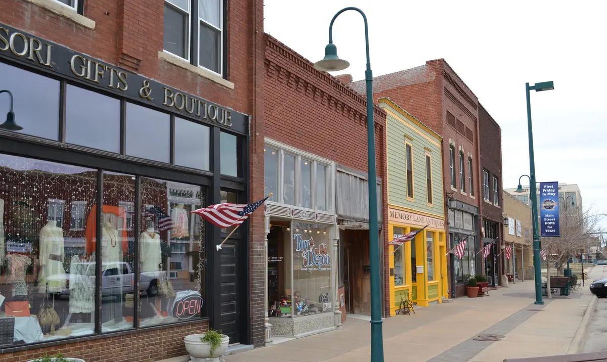

5 Things People Forget When Renting a Storage Unit
Avoid the most common first-timer mistakes and get your storage experience off to the right start.

Renting a storage unit seems simple enough — pick a size, sign the lease, load your stuff. But after helping hundreds of tenants at our Hutchinson facility on E 17th Ave, we've noticed the same handful of oversights come up again and again. They're not complicated problems, but they can cost you time, money, or even damaged belongings if you don't think about them upfront.
Whether you're storing furniture during a home renovation near downtown Hutchinson, clearing out a garage before the Kansas State Fair, or just need somewhere to keep seasonal gear, here are five things most people forget when renting a self storage unit — and how to handle each one.
1. Insurance Coverage for Your Stored Belongings
This is the one that catches almost everyone off guard. Most people assume that because a storage facility is secure, the facility's insurance covers their belongings. It doesn't. A storage facility's insurance policy covers the building itself — the walls, the roof, the doors. Your personal items inside the unit are your responsibility.
The good news is that many homeowners and renters insurance policies extend coverage to items stored off-site, including in a self storage unit. Before you move anything in, call your insurance provider and ask whether your policy covers belongings in storage, what the coverage limit is, and whether there's a deductible. If you're a renter, check your renters policy — many include off-premises coverage, but the limits can be low.
If your existing policy doesn't cover stored items — or the limits aren't high enough — we offer tenant protection at Reno County Storage. It's an affordable add-on that gives you coverage specifically for items in your unit. Think of it as peace of mind for the things you care about, especially if you're storing anything valuable like electronics, furniture, or family heirlooms.
2. Moisture Prevention
This is the biggest practical mistake people make in south central Kansas, and it's one that can cause real damage. Hutchinson and the surrounding Reno County area get genuinely humid summers — average relative humidity can sit above 80 percent on a July morning. That moisture doesn't just stay outside. It finds its way into storage units, and if you're not prepared for it, you can end up with mildew on furniture, musty-smelling clothes, warped wood, and ruined documents.
Here's how to prevent moisture problems in your storage unit:
- Use DampRid or silica gel packs. Place moisture absorbers throughout your unit, especially near fabric items and cardboard boxes. DampRid is cheap, widely available at Hutchinson hardware stores, and genuinely effective. Replace it every month or two during the summer.
- Use breathable covers, not plastic. It's tempting to wrap everything in plastic sheeting, but plastic traps moisture against surfaces. Use cotton drop cloths or furniture pads instead — they protect against dust while letting air circulate.
- Elevate items off the concrete floor. Set pallets, 2x4s, or plastic shelving on the floor and place boxes and furniture on top. Concrete can wick moisture from the ground, especially after heavy rain, and direct contact is one of the fastest ways to get mold on the bottom of your belongings.
- Never store anything damp. This sounds obvious, but it happens more often than you'd think. Camping gear that wasn't fully dried, clothes pulled straight from the washer into a box, a cooler that still has moisture inside — any dampness you bring in will spread in a closed unit. Make sure everything is completely dry before it goes in.
For a deeper dive on protecting your items from Kansas humidity, check out our full guide on protecting your belongings from Kansas humidity.
3. Choosing the Wrong Unit Size
This one goes both directions. Some people rent a unit that's too small, then spend moving day trying to cram everything in like a puzzle that doesn't fit. Others rent way more space than they need and end up paying for empty square footage every month. Both are frustrating, and both are avoidable with a few minutes of planning.
The trick is to think room by room. A single bedroom's worth of furniture and boxes typically fits in a 10x10 unit. A full two-bedroom apartment usually needs a 10x15 or 10x20. If you're just storing seasonal items, sports equipment, or a few boxes, a 5x10 is probably plenty.
Our interactive size guide walks you through each unit size with visuals so you can match your belongings to the right footprint. It takes the guesswork out of the equation.
And here's the best advice we give to first-time renters at Reno County Storage: when in doubt, go one size up. The monthly price difference between sizes is usually small, and having a little extra room means you can leave an aisle for access, allow airflow around your items, and accommodate the inevitable extra boxes you didn't plan for. Plus, better airflow means less moisture buildup — which matters a lot during those humid Hutchinson summers.
4. Packing for Access, Not Just Capacity
Most people pack a storage unit the same way they'd pack a moving truck — fill every inch, close the door, and walk away. That works fine if you're not planning to open the unit for six months. But if you'll be visiting your unit regularly to grab seasonal gear, pull out holiday decorations, or retrieve documents, you'll want a plan that prioritizes access over pure capacity.
Here's how to pack a storage unit you can actually use:
- Leave a center aisle. Stack items along the walls and leave a walkway down the middle so you can reach boxes in the back without moving everything in front of them. This one change makes a bigger difference than anything else.
- Put items you'll need first near the front. Think about what you're likely to grab soonest and load it last so it ends up closest to the door. Seasonal items you won't touch for months can go in the back.
- Label boxes on two sides. Not just the top — two sides. When boxes are stacked, you can only see the sides, and a box labeled "Kitchen - Dishes" is a lot easier to find than an unmarked brown box buried in a stack of ten.
- Keep an inventory list. A simple spreadsheet or even a handwritten list of what's in each box and roughly where it sits in the unit saves enormous time. You can keep a copy on your phone and update it whenever you add or remove items.
- Take a photo of your unit after loading. A quick snapshot from the doorway gives you a visual map of where everything is. It's especially helpful if you're not visiting the unit often and can't remember whether the box you need is on the left side or the right.
5. Ignoring the Lease Terms
Nobody enjoys reading a lease, but a storage lease is usually just a page or two, and skipping over it can lead to surprises you don't want. Here are the key things to pay attention to.
- Notice period. At Reno County Storage, we require 10 days' notice before your next billing cycle if you're moving out. That's pretty standard, but if you don't give proper notice, you could be charged for an extra month. Mark a reminder on your calendar when you know your move-out date is approaching.
- Late fees. Life gets busy and bills slip through the cracks, but late payments on a storage unit can add up fast. Know when your payment is due and what the late fee is so there are no surprises. Better yet, set up auto-pay — we offer it at Reno County Storage, and it's the easiest way to make sure you never miss a payment.
- Access hours. Some storage facilities restrict when you can visit your unit. At Reno County Storage, you get 24/7 access with your personal gate code, so you can stop by at 6 AM before work or 10 PM after a late shift. But not every facility offers this, so always check before you sign.
- What you can and can't store. Most leases prohibit hazardous materials, flammable liquids, perishable food, and living things (no, you can't store your buddy's parrot). Read the list so you don't accidentally violate your lease.
Bonus: Don't Forget Your Lock
Here's one more that surprises a lot of first-time renters: you usually need to bring your own lock. Some people show up on move-in day with a truck full of boxes and no lock for the door.
At Reno County Storage, we've solved this problem — every new tenant gets a free lock when they move in. It's one less thing to worry about. But if you ever need a replacement or prefer to use your own, we recommend a disc lock (sometimes called a disc padlock). Disc locks are designed specifically for storage units — they sit flush against the door hasp, which makes them extremely difficult to cut with bolt cutters. They're a meaningful upgrade over a standard padlock if security is a priority for you.
Frequently Asked Questions
Does the storage facility's insurance cover my belongings?
No. The facility's insurance covers the building structure, not your personal items. Your homeowners or renters insurance may extend coverage to items in storage — check with your provider. If you need dedicated coverage, Reno County Storage offers affordable tenant protection plans that cover your stored belongings.
How do I prevent mold and mildew in my storage unit?
Use moisture absorbers like DampRid, cover furniture with breathable cotton covers instead of plastic, elevate items off the concrete floor with pallets or shelving, and make sure everything is completely dry before storing it. This is especially important in south central Kansas where summer humidity regularly exceeds 80 percent.
What happens if I forget to give move-out notice?
At Reno County Storage, we require 10 days' notice before your next billing cycle. If you don't provide notice in time, you may be charged for an additional month. We recommend setting a calendar reminder as soon as you know your move-out date so you don't miss the window.
Does Reno County Storage provide a lock?
Yes. Every new tenant receives a free lock at move-in. If you prefer to use your own, we recommend a disc lock for maximum security. Disc locks sit flush against the hasp and are much harder to tamper with than standard padlocks.
More from the Blog

How to Protect Your Belongings from Kansas Humidity
Kansas humidity can damage stored items. Here's how to keep everything dry and mold-free.

What Is Tenant Protection and Do You Need It?
Your insurance might not cover items in storage. Here's what to know.

How to Choose the Right Storage Unit Size
Not sure what size you need? This guide breaks down common sizes so you can find the perfect fit.